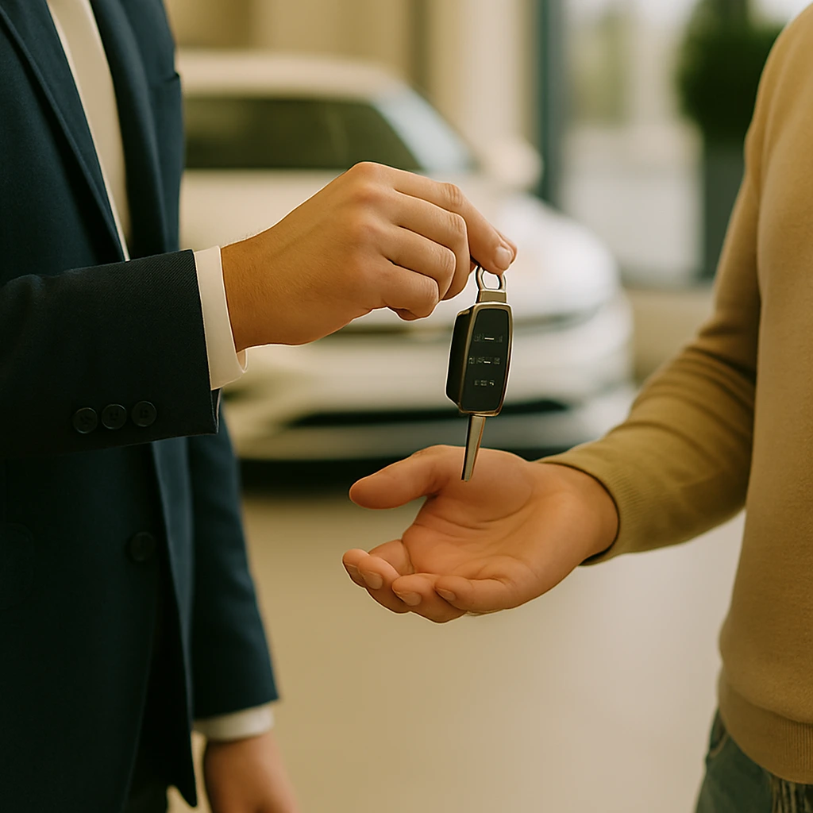
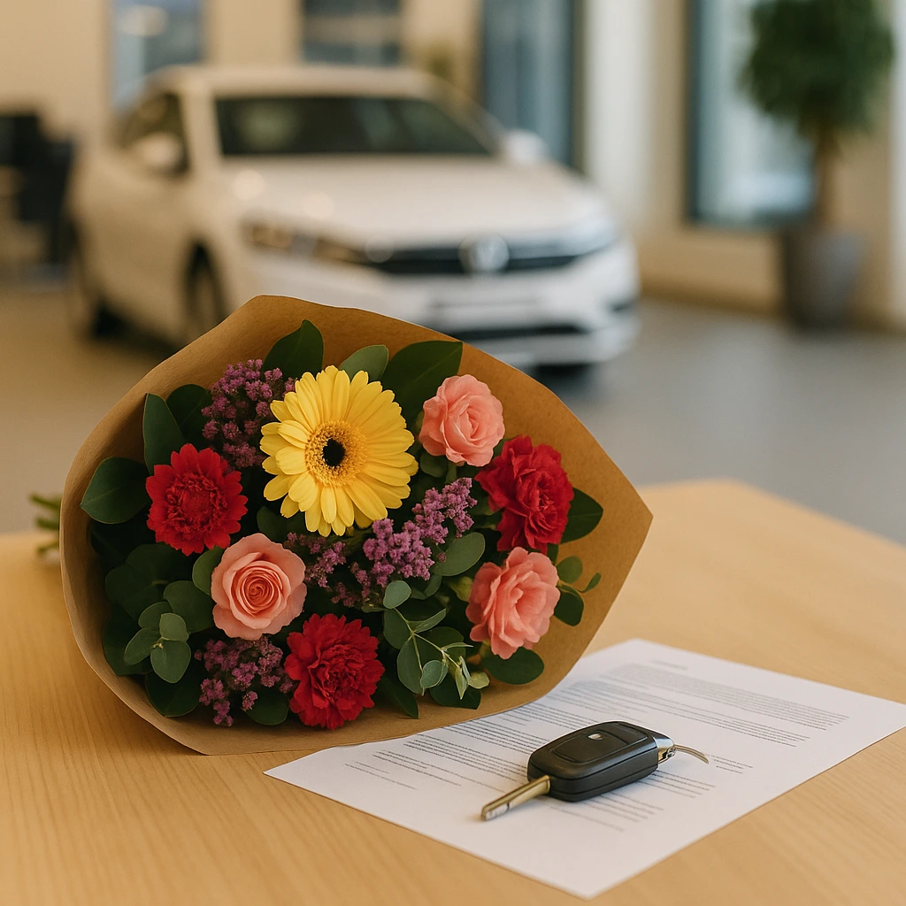

Klantverhaal – Peter
Peter had al een offerte liggen, maar vroeg zich af of er meer mogelijk was. Met mijn marktkennis en persoonlijke inzet zorgde ik ervoor dat hij uiteindelijk een aanzienlijk hoger bod voor zijn inruilauto ontving.
“Ik dacht dat de offerte die ik had ontvangen redelijk was. Pepijn keek ernaar en zag direct dat er veel meer mogelijk was. Dankzij zijn begeleiding heb ik uiteindelijk een flink hoger bod gekregen voor mijn inruil. Dat gaf me niet alleen financiële ruimte, maar ook een heel goed gevoel bij de aankoop van mijn volgende auto.”

Klantverhaal – Mary
Mary zocht een kleinere auto en haar grote Volvo moest de deur uit. Ze had geen idee waar ze moest beginnen en voelde zich onzeker over het hele proces.
“Ik zocht een kleinere auto en mijn Volvo moest de deur uit. Ik heb zelf totaal geen verstand van auto’s en vond het spannend om zomaar ergens binnen te stappen. Pepijn heeft mij compleet begeleid: van meedenken tot onderhandelen. Hierdoor werd het kopen van een nieuwe auto echt een feestje. Ik voelde me gezien, gehoord en volledig ontzorgd.”
